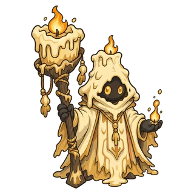

Sezon 2 · Aktualizacja 10 · 13 listopada
Obrona zamku
- Ochrona zamku: Zamek nie otrzymuje już obrażeń odsyłanych przez Kolce lub Odbijanie wrogów. Jego strzały mogą trafić wroga z Kolcami bez szkody dla zamku, a Odbijanie trafia teraz tylko pluszaki wokół.
- Ranking „Zagraj razem”: W rankingu „Zagraj razem” drużyna dzieli teraz jedno miejsce, a pod nim widać imiona jej członków. Jeśli dwie drużyny mają dokładnie tyle samo punktów, wyżej jest ta, która zdobyła ten wynik pierwsza. Na koniec sezonu wszyscy członkowie 3 najlepszych drużyn dostają tytuł swojego miejsca.
- Lobby: Tytuły za miejsce z poprzedniego sezonu i karta nowości sezonu docierają teraz do ciebie także w lobby.
- Zachowane Wskrzeszenie: Jeśli zakup Wskrzeszenia zakończy się dopiero po upadku zamku, Wskrzeszenie zostaje zachowane i użyte za darmo przy następnym upadku. Teraz pojawia się wtedy „Wskrzeszenie zachowane na następny raz”.
- Okno zakupu: Gdy zamkniesz okno zakupu Ponownego losowania albo Wskrzeszenia, odzyskasz teraz czas na wybór, który upłynął, gdy było otwarte.
- Graj dalej: Pluszaki W naprawie lub ukryte schodzą teraz z pola bitwy, gdy grasz dalej zapisaną rozgrywkę.
- Zmiana sezonu o północy: Wynik rozgrywki, która trwa dalej po północy kończącej sezon, nie trafia na tablicę rekordów nowego sezonu. Monety dostajesz jak zwykle.
- Wyjście w chwili upadku zamku: Jeśli wyjdziesz z gry dokładnie w chwili, gdy zamek pada, rozgrywka jest teraz rozliczana jako zakończona upadkiem zamku.
- Ekran: Liczby obrażeń i znaczniki nad głowami widać teraz także przy maksymalnie oddalonej kamerze, a pogoda etapu obejmuje teraz także pole bitwy.
- Krwawy pakt · Więź many: Nawet gdy są na tym samym pluszaku, nie przekazują już pobliskim pluszakom całej many.
- Kość losu · Nakręcana mysz: Po rundzie, karcie, przedmiocie albo gdy pokonany pluszak znów stanie na polu, działają teraz dalej od miejsca, w którym skończyły, zamiast znów zaczynać od pierwszego rzutu.
Zmiany pluszaków

Candric
- Niegasnący płomień: Ostatnie starcie ani mnożniki atakującego nie mnożą już drugi raz obrażeń przejmowanych za sojusznika. Candric przyjmuje teraz 200%, jak podaje opis. Naprawiono też błąd, przez który obrażenia krążyły bez końca między dwoma pluszakami Candric, które nałożyły na siebie nawzajem znak.
Automat z pluszakami i pojedynki towarzyskie
- Za próbę, w której chwytak zaciął się przed opuszczeniem i założono nowy, dostajesz teraz zwrot monet, a próba nie liczy się jako nieudana.
- W pojedynku towarzyskim zmiana drużyny po naciśnięciu „Gotowe” cofa teraz gotowość. Podczas przygotowań do pojedynku towarzyskiego nie możesz grać w automacie z pluszakami.
Poprawki błędów
- Naprawiono błąd, przez który w trybie „Zagraj razem” po powrocie gospodarza nikt nie widział liczb obrażeń i efektów ani nie słyszał dźwięków.
- Naprawiono błąd, przez który nowy gracz utykał na ekranie drużyny, gdy pluszak z samouczka był W naprawie. Teraz samouczek się kończy i gra toczy się dalej.
- Naprawiono błąd, przez który zużycie pamięci urządzenia rosło, im dłużej trwała rozgrywka w Obronie zamku.
- Naprawiono błąd, przez który boss lub elita (Bonix), którzy wrócili do życia, po pokonaniu nie dawali nagród za bossa.
- Naprawiono błąd, przez który przy prędkości ×2 efekty umiejętności i animacje ciosów były odtwarzane z prędkością ×1.
- Naprawiono błąd, przez który nie można było kupić Wskrzeszenia, gdy było otwarte okno Ustawień, pauzy albo Szans.
- Naprawiono błąd przy „Graj dalej” w rozgrywce z wieloma kartami „Obszar działania” albo z zajętymi wszystkimi miejscami na polu bitwy.
- Naprawiono błąd, przez który Gąszcz cierni pluszaka Briarowl mógł się kumulować albo przestawał być widoczny, gdy Briarowl padł.
- Naprawiono błąd, przez który drużyna się rozpadała, gdy nie udało się jej przenieść.
- Naprawiono błąd, przez który ramka zagrożenia i muzyka bossa zostawały na karcie wyniku, a do rozliczenia rozgrywki po „Spróbuj ponownie” trafiały liczby z poprzedniej rozgrywki.
- Naprawiono błąd, przez który powidok przedmiotu Bliźniacze ostrza i obszar flagi zostawały po zmianie przedmiotu.
- Naprawiono błąd, przez który tablice rekordów wyglądały na puste, gdy ich odczyt na chwilę się nie powiódł.
- Naprawiono błąd, przez który nic się nie wyświetlało, gdy przyznanie zakupu za Robux się opóźniało. Teraz pojawia się „Twój zakup jest w drodze”.
- Naprawiono błąd, przez który karta wyniku przerwanego meczu nie podawała powodu, a długie tytuły i powiadomienia na ekranie „Zbuduj drużynę” były ucinane.